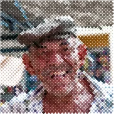

হাফটোন

প্রিন্টেড ডট, যা ছবির গাঢ় জায়গায় বড় হয়।
সেটিংস
| সেটিং | ধরন | রেঞ্জ | ডিফল্ট |
|---|---|---|---|
| সাইজ | সংখ্যা | 2 থেকে 200 | 10 |
| অ্যাঙ্গেল | কোণ | -360° থেকে 360° | 45° |
| কালার ডট | চালু বা বন্ধ | – | চালু |

প্রিন্টেড ডট, যা ছবির গাঢ় জায়গায় বড় হয়।
| সেটিং | ধরন | রেঞ্জ | ডিফল্ট |
|---|---|---|---|
| সাইজ | সংখ্যা | 2 থেকে 200 | 10 |
| অ্যাঙ্গেল | কোণ | -360° থেকে 360° | 45° |
| কালার ডট | চালু বা বন্ধ | – | চালু |